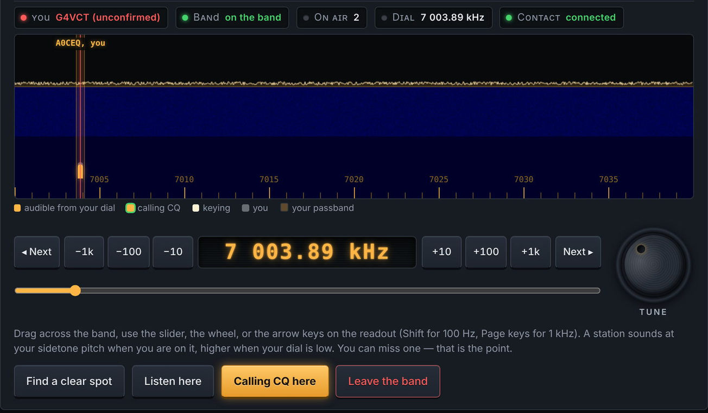

رفتن به متن
CW Trainer
· راهنمای کاربر
English
العربية
باز کردن برنامه
CW Trainer
راهنمای کاربر
دورهٔ کُخ
تمرین ارسال
QSO شبیهسازیشده
روی آنتن مجازی با دیگر اعضا
نسخهٔ 0.15.5
· نوامبر ۲۰۲۶ (آبان ۱۴۰۵)
برنامهٔ وب در نشانی
cw.mikroutik.com
© ۲۰۲۶ محمد بحرالعلوم، ex EP2MHB
شروع مطالعه
دریافت نسخهٔ PDF
باز کردن برنامه

فهرست
1
خوش آمدید
1.1
این برنامه چیست و چه نیست
1.2
کجا پیدایش کنید و چه لازم دارید
1.3
نصب بهصورت اپ
1.4
شیوهٔ نگارش این راهنما
2
شروع در پنج دقیقه
2.1
صفحهٔ خوشآمد
2.2
اولین اجرا
2.3
صفحهٔ سربرگ
2.4
زبانهها
3
زبانهٔ Receive — یادگیری دریافت
3.1
روش کُخ و قانون ۹۰٪
3.2
آزمونی که کاراکتر تازه را اضافه میکند
3.3
اجرای یک جلسه
3.4
چه چیزی تمرین کنید
3.5
سرعت: دو عدد، نه یک عدد
3.6
نیمهکاره گذاشتن یک رشته
3.7
تمرین در شرایط واقعی
4
پایان دوره — آزمون نهایی و گواهی
4.1
چه کسی میتواند در آن شرکت کند
4.2
آزمون چگونه به مرورگر شما میرسد
4.3
سرعت از آنِ شماست و روی گواهی مینشیند
4.4
قبولی و مردودی
4.5
گواهی
4.6
صفحهٔ عمومی، و خاموش کردنش
4.7
اگر حسابتان را ببندید
5
زبانهٔ Send — تمرین کلیدزنی
5.1
کلیدها و پدالها
5.2
فرستادن یک هدف
5.3
خواندن گزارش ارسال
5.4
سنجش تأخیر
6
زبانهٔ QSO — تماس با اپراتور شبیهسازیشده
6.1
شکل یک تماس کوتاه
6.2
آماده کردن تماس
6.3
جواب دادن، و صدا زدن
6.4
تایپ کردن پاسخ، یا کلید زدنش
7
زبانهٔ On air — تماس با دیگر اعضا
7.1
ورود و ساخت حساب
7.2
چراغهای وضعیت
7.3
اسکوپ باند و آبشار
7.4
VFO: نمایشگر، ولوم و دکمهها
7.5
فهرست Heard
7.6
CQ زدن، و جواب دادن
7.7
کلید شما، و نوبتبهنوبت
7.8
چه چیزی میان شما رد میشود، و تأخیر
7.9
دفتر شما، RST و خروجی ADIF
7.10
گزارش مشکل با ایستگاه دیگر
7.11
برای مدیران
8
زبانهٔ Progress
8.1
چه چیزی سنجیده میشود
9
زبانهٔ Settings
9.1
صدا (Audio)
9.2
شرایط واقعی (Real conditions)
9.3
نقشهٔ کلید (Key mapping)
9.4
دادههای شما (Your data)
9.5
حساب شما: پروفایل و گذرواژه
9.6
نگه داشتن سوابق تمرین روی سرور
10
مرجع اپراتوری
10.1
الفبای مورس
10.2
پایان ارسال: K، KN، AR و SK
10.3
کدهای Q
10.4
اختصارها
10.5
کلیدهای میانبر
11
وقتی چیزی کار نمیکند
11.1
صدا
11.2
کلید و پدال
11.3
تأخیر و بلوتوث
11.4
باند
11.5
دادهها
12
واژهنامه
12.1
هر اصطلاحی که برنامه روی صفحه میآورد